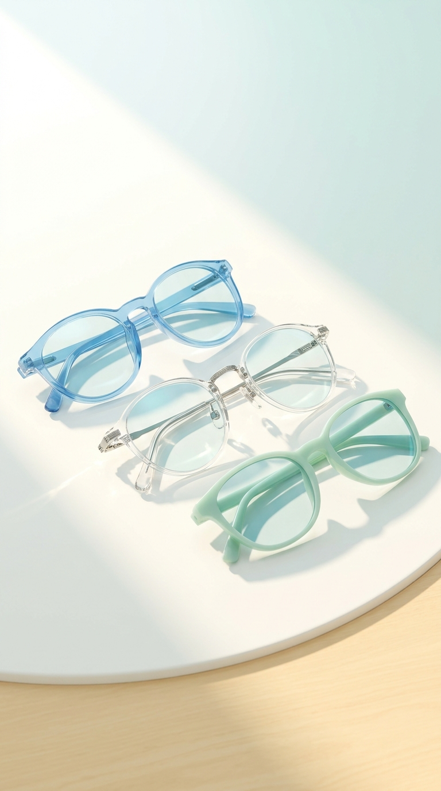
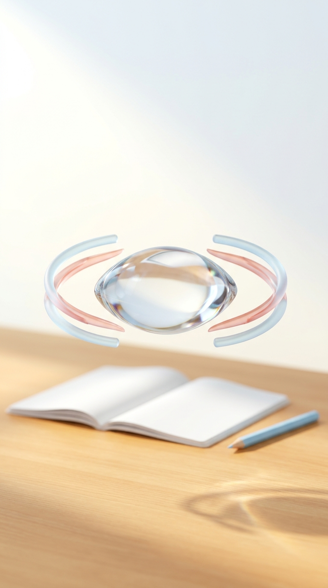
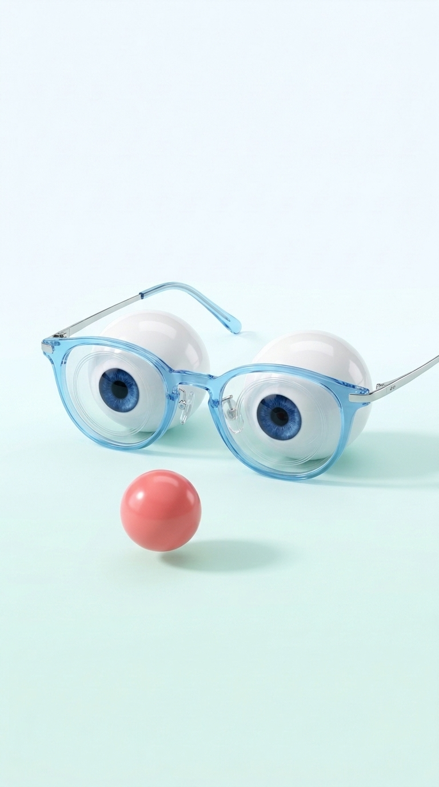
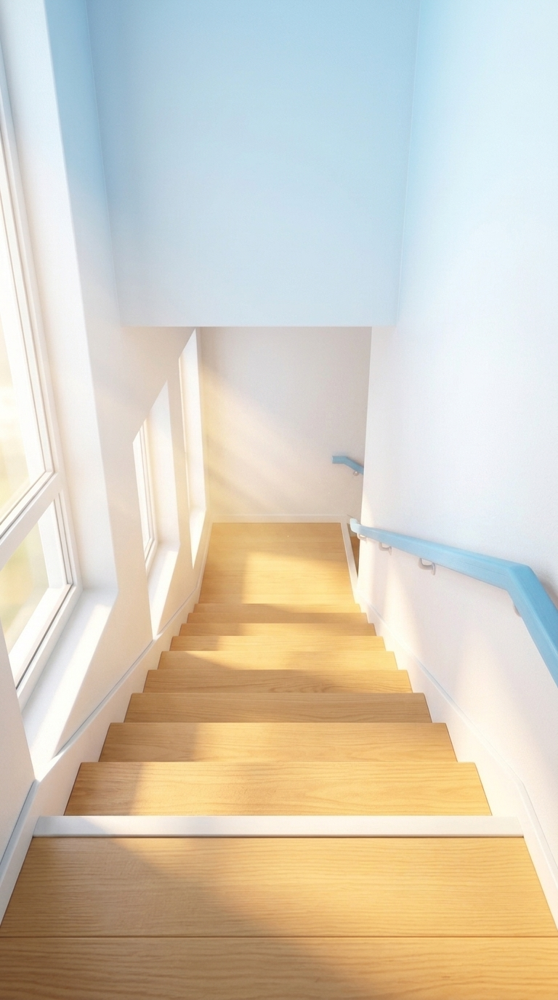
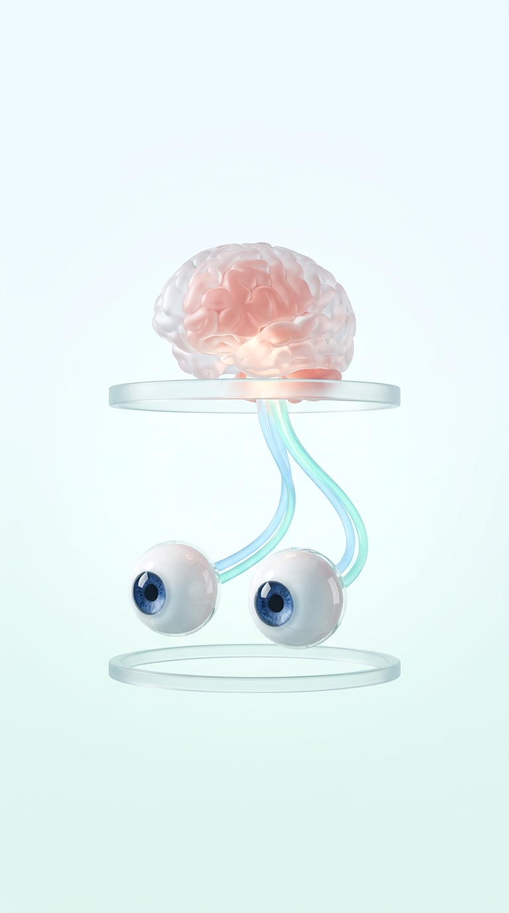

KAKA VISION LAB · 视光小课堂
EP.13 — 01 / 06
01 · THE OVERLOOKED FACTOR
眼镜换了好几副还在涨？
90% 家长漏查的关键项
90% 家长漏查的关键项
问题往往不在镜片品牌，而是忽视了「视功能」
第 1 副 · 常规防控镜
第 2 副 · 更换品牌
第 3 副 · 度数仍在涨？
90% 家长从未做过的检查
视功能
BINOCULAR VISUAL FUNCTION
CASE 01 · ACCOMMODATION FATIGUE
验光只有 100°
看书写作业却喊眼睛累
看书写作业却喊眼睛累
睫状肌近距离调节负荷
负荷 32% · 对焦轻松
CASE 02 · CONVERGENCE DEFICIT
戴了离焦镜半年还在涨？
双眼根本对不到一起
双眼根本对不到一起
NEAR POINT OF CONVERGENCE · 集合近点监测
双眼视轴同步对焦 · 离焦信号落位正常
双眼对齐
● 离焦微透镜区
× 集合近点退远 · 双眼无法会聚
CASE 03 · FIRST-PERSON POV
视力 1.0，却老接不住球？
孩子眼里的空间深度错觉
孩子眼里的空间深度错觉
× 大脑误判落点（偏近）
● 来球真实位置
× 阶梯落差误判 ±8cm · 踩空感
ARCHITECTURE · TWO LAYERS OF VISION
视觉功能，其实分为两层
眼睛硬件 与 大脑解码
眼睛硬件 与 大脑解码
LAYER 02 · 高级视功能
大脑解码处理
负责处理眼睛传来的画面信息
判断距离
分辨左右
图形记忆分析
LAYER 01 · 基础视功能
眼睛基础运作
常规视光检查重点关注的基础层
看清程度
用眼持久
双眼精准对齐
THE CORE INSIGHT · 验光单盲区
三个场景，普通验光单查不出
别只看卷面分，要看解题过程
别只看卷面分，要看解题过程
01
会不会用
02
能不能用
03
是否持久
KAKA VISION LAB
关注卡卡老师
带你看懂孩子眼睛背后的真相
NEXT CHECKUP REMINDER · 下次复查必问
“医生，有没有查孩子的视功能？”
卡卡老师 · 视光科普
卡卡老师 · 视光科普
卡卡讲解中